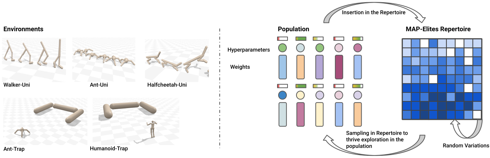
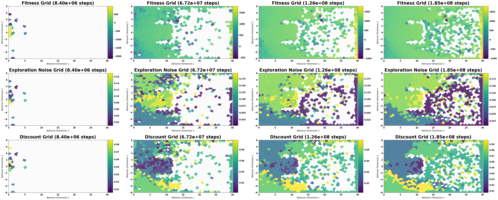

CS410.Q21
The UIT course listing identifies this class as Mạng neural và thuật giải di truyền, or Neural Networks and Genetic Algorithm.
Mạng neural và thuật giải di truyền
This page documents our final project for CS410.Q21 at UIT. We study the ICLR 2023 paper by Arthur Flajolet and Thomas Pierrot and reproduce the main ideas through QDax experiment assets and rollout visualizations.
Course Context
The UIT course listing identifies this class as Mạng neural và thuật giải di truyền, or Neural Networks and Genetic Algorithm.
The paper sits directly between the two halves of the course: evolutionary search through MAP-Elites and neural policy learning through SAC/TD3-style reinforcement learning.
The CS410 syllabus includes group project work and final project seminar presentations in weeks 14-15, so this site is a course deliverable, not only a paper landing page.
Core Idea
Standard MAP-Elites fills a behavior descriptor archive with diverse, high-fitness solutions. This paper extends the idea to deep RL by evolving entire agents: policy parameters, critic parameters, replay buffers, and hyperparameters.
The result is a flexible framework that can pair MAP-Elites with different RL learners such as SAC or TD3 while keeping the population naturally parallelizable.

Experiment Setup
HalfCheetah-Uni, Walker2d-Uni, and Ant-Uni test whether algorithms can cover contact-pattern descriptor spaces while keeping strong forward locomotion performance.
AntTrap and HumanoidTrap use deceptive rewards. Agents need exploration pressure to move around the obstacle instead of settling for locally attractive behavior.
The reported comparisons use QD score, archive coverage, and maximum fitness across repeated runs.
Rollout Videos
Side-view rollout showing a learned forward locomotion behavior.
Alternative gait from the archive, labeled by its descriptor value in the source file.
Longer rollout of an ant-like agent moving through a grid-world trap setup.
Overhead trajectory view showing the agent's interaction with the obstacle layout.
Short overhead rollout where the agent clears the trap region more directly.
Results
The paper reports that the SAC variant solves HumanoidTrap within the timestep budget and that PBT-MAP-Elites generally improves coverage and QD score over pure PBT because it explicitly optimizes for a diverse repertoire rather than only the single best agent.

Resources